Bo Miao苗博
Postdoctoral Researcher
Australian Institute for Machine Learning, Adelaide University
I am a postdoctoral researcher at the Centre for Augmented Reasoning, Australian Institute for Machine Learning (AIML), working with Anton van den Hengel and Feras Dayoub. I received my Ph.D. in Computer Science from The University of Western Australia, supervised by Ajmal Mian, Mohammed Bennamoun, and Yongsheng Gao.
My research interests include embodied AI, vision-and-language, video understanding, and human–computer interaction.
I am always happy to discuss research and potential collaborations. Please feel free to reach out by email.
News
- Our paper LangMap: A Human-Verified Benchmark for Hierarchical Open-Vocabulary Goal Navigation was accepted to NeurIPS 2026 (Evaluations & Datasets Track).
- Our paper Disentangled Hierarchical VAE for 3D Human-Human Interaction Generation was accepted to ICLR 2026.
- Our paper CymbaDiff: Structured Spatial Diffusion for Sketch-based 3D Semantic Urban Scene Generation was accepted to NeurIPS 2025.
- Our paper Context-Enhanced Video Moment Retrieval with Large Language Models was accepted to IEEE TMM.
- Our paper Denoise-then-Retrieve: Text-Conditioned Video Denoising for Video Moment Retrieval was accepted to IJCAI 2025.
- Our paper Referring Human Pose and Mask Estimation in the Wild was accepted to NeurIPS 2024.
- Our paper Temporally Consistent Referring Video Object Segmentation with Hybrid Memory was accepted to IEEE TCSVT.
- Our paper Region Aware Video Object Segmentation with Deep Motion Modeling was accepted to IEEE TIP.
Publications
Full list on Google Scholar
-
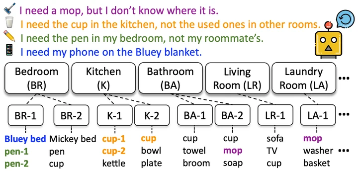
LangMap: A Human-Verified Benchmark for Hierarchical Open-Vocabulary Goal Navigation
NeurIPS 2026Advances in Neural Information Processing Systems (Evaluations & Datasets Track)
-
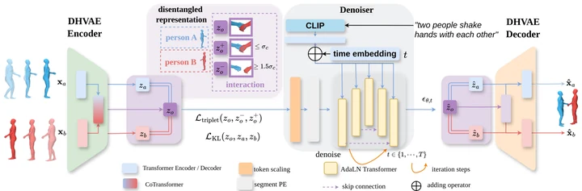
-
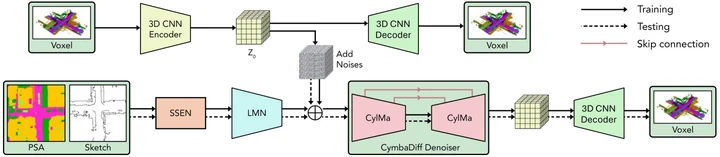
-
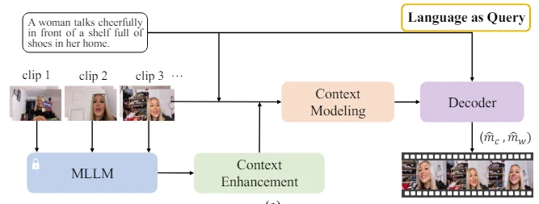
Context-Enhanced Video Moment Retrieval with Large Language Models
TMM 2025IEEE Transactions on Multimedia
-
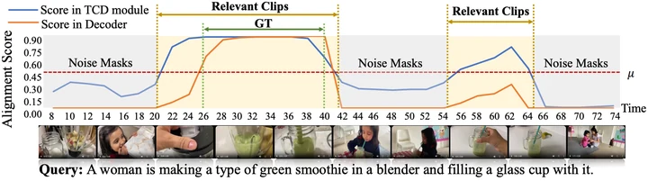
Denoise-then-Retrieve: Text-Conditioned Video Denoising for Video Moment Retrieval
IJCAI 2025International Joint Conference on Artificial Intelligence
-
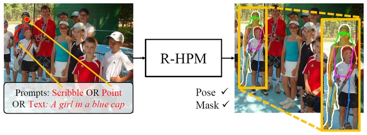
-
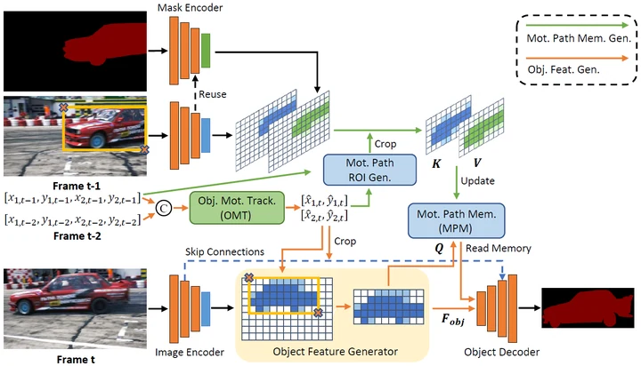
Region Aware Video Object Segmentation with Deep Motion Modeling
TIP 2024IEEE Transactions on Image Processing
-
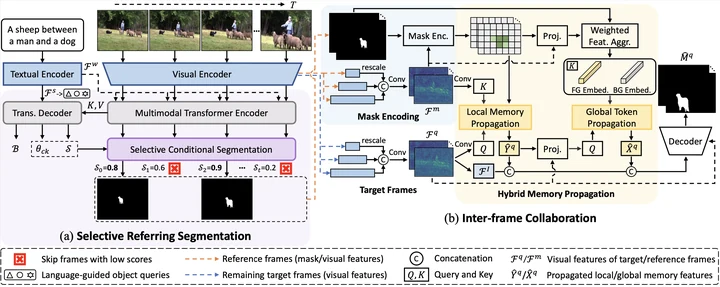
-
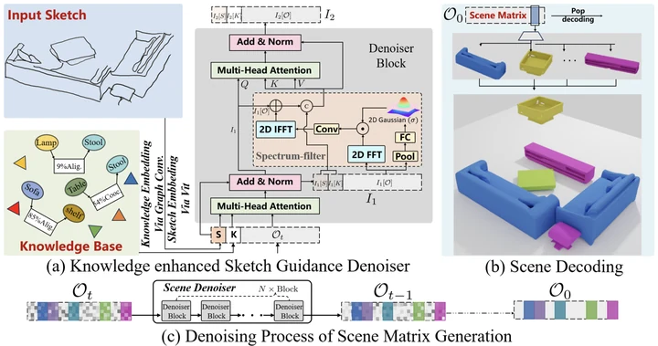
External Knowledge Enhanced 3D Scene Generation from Sketch
ECCV 2024European Conference on Computer Vision
-
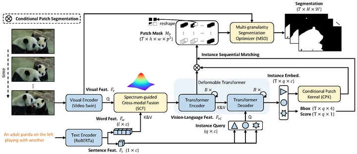
-
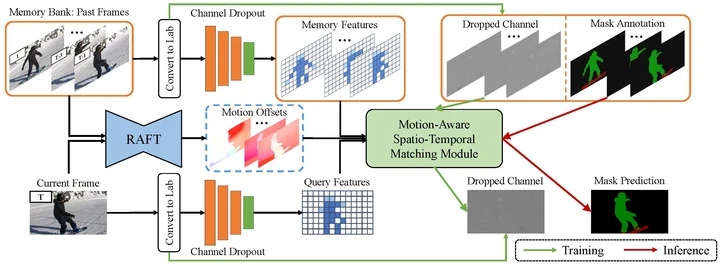
-
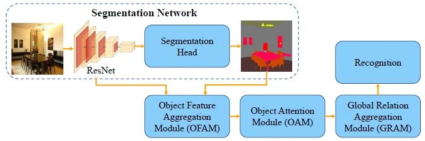
Honours & Awards
- Dean’s List Honourable Mention for Ph.D. thesis, The University of Western Australia, 2025
- Third Place, Large-scale Video Object Segmentation Challenge, Referring VOS Track, ICCV 2023
- Excellent Presentation Award, UWA CSSE HDR Conference
- Best Paper Finalist, ICCSS 2017
Academic Service
- Guest Editor
- Special Issue on Foundation Models for Robotics, Robotics
- Session Chair
- IROS 2021, YAC 2026 (41st Youth Academic Annual Conference of Chinese Association of Automation)
- Conference Reviewer
- NeurIPS, ICLR, ICML, CVPR, ICCV, ECCV, AAAI, IROS, ACCV, DICTA
- Journal Reviewer
- IEEE TPAMI, IJCV, IEEE TIP, IEEE TMM, IEEE TCSVT, Neurocomputing